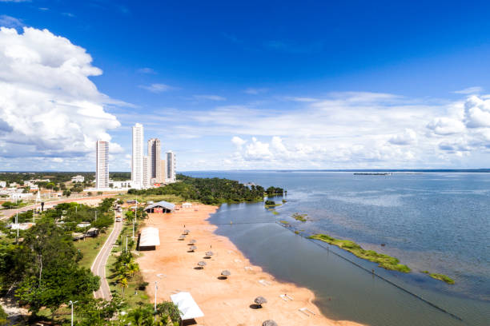

Tocantins é um estado localizado na região Norte do Brasil, criado em 1988, sendo um dos mais jovens do país. Sua capital é Palmas, uma cidade planejada e moderna, que se destaca por sua arquitetura e urbanismo. Tocantins possui uma economia diversificada, com destaque para a agricultura, a pecuária e a produção de commodities como soja, milho, algodão e carne bovina. O estado também é conhecido por suas belezas naturais, incluindo rios, cachoeiras e áreas de cerrado, que atraem turistas e estudiosos da biodiversidade. Além disso, Tocantins tem uma cultura rica, influenciada por tradições indígenas, sertanejas e de migrantes de várias regiões do Brasil.
